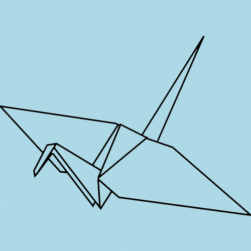

This article clarified my unconscious desire to create a digital space that is considered not just art but also a personal, creative, informative, and intimate environment. Before starting this class, I looked up to the websites that were created by content manangement systems because they looked so modern and put together. However, this class/this article gave me a greater appreciation for handmde websites. I'm guessing handmade webs can irk people sometimes because they are a constant work in progress, but there is beauty to that. These handmade websites have the capability to reflect the aging and evolution of one's own life which I believe is an underappreciated oppurtunity.
back I thought this was a really cool reading because it contained a lot of depth. There was so much information within this article, almost as if it could be a scholarly article or essay, but the authors presented the information in a really creative and representative way. I liked how within each section of the reading, little messages came up in the sections to let me know what new information has popped up. It is reminicent of text messages and IM which is relevant with the meaning of the article. This reading also made me realize a lot of things regarding the influence and power of technology and online writing on business and relationships. There are many business apps that incorporate social connecting. Technology is allowing different spheres and platforms to have socializing capabilities even though they may not be totally necessary for every purpose. Technology has also created a different kind of addiction. I thought the part about the "pulsating elipses" was interesting because it is true. There is so much meaning embedded within the three dots. So much anticipation, excitement, tension. There is now new complexity and depth within simple words all due to social media and technology. The dynamics of texting is also quite fascinating. There are pauses, emotions, emphasis, tone, all which are similar to an in person conversation. But just like real life there are ways to stop talking to someone. You can leave someone on read, you can block them, leave the groupchat, leave the facetime. In real life you just walk away, and close your mouth. I guess this is obvious observation but stopping talking to someone over text or whatever platform carries more meaning than stopping in real life. For some reason people seem to care about talking to people more in technology. It is interesting how this all developed but scary about how much it is changing human relationships.